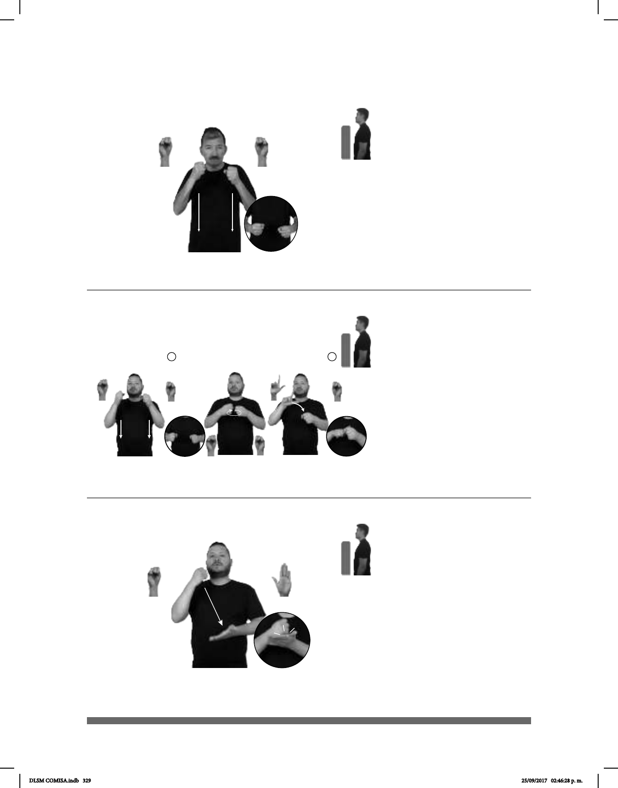

329
(S-106)
Seña: SS
S.1
Las palmas se encuentran
frente a frente.
De los hombros al pecho.
Recto.
1. adj. Que es o que está
libre de todo peligro, daño, pérdida o
lo que hace y dice. 2. v. tr. Hacer que
certeza de algo.
_____________________o.i.g
pro-TÚ DECIR ESO SEGURO
¿Estás seguro de lo que dices?
1 2
Seña: SC: I. SS; II. SB
I. S.1; II. S.1, MD L.1, MB
S.1
I. Las palmas se encuentran
frente a frente; II. MD palma hacia abajo.
MB palma hacia la derecha.
I.A la altura del pecho; II. A la
altura el pecho, dedo índice de MD sobre
MB,
I. Recto hacia abajo; II. Las
muñecas giran y MD apoya el índice sobre
la MB.
administra el gobierno para satisfacer las
necesidades básicas de las personas con
bajos recursos. Por lo general suelen estar
dirigidos a trabajadores del Estado, a quie-
nes viven en condiciones de pobreza, a los
discapacitados, a las familias numerosas y a
los ancianos.
(S-107)
TRABAJO NUEVO SEGURO SOCIAL él-DAR-a-mí PARA DOCTOR él-TRATAR-a-mí
En mi nuevo trabajo me dieron seguro social para mi atención médica.
Seña:SB
MD S.1, MB B-P.2
MD palma hacia dentro. MB
palma hacia arriba.
A la altura del pecho. MD sobre
MB.
La MD golpea a la MB en
línea recta.
Simula la acción de colo-
car un sello.
sust.m. Utensilio consistente en
una plancha de metal o de hule, en la que
está grabado algún dibujo o una leyenda
particular, sujeta a un mango y que al
mojarse en tinta se estampa en ciertos
documentos para darle autoridad o validez.
(S-108)
VENTANA FILA GOBIERNO TRÁMITE ENTREGAR PAPEL DEBER PONER-SELLO
Entrega el trámite en la ventanilla de gobierno, deben poner un sello.
DLSM COMISA.indb 329 25/09/2017 02:46:28 p. m.